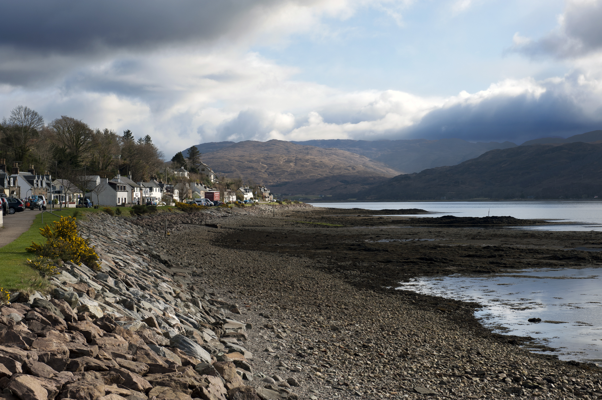

Daily Thought
Loading today's thought...

Loading today's thought...
Loading
Feels like --
Local seasonal estimate
Checking Lochcarron seasonAurora activity
Checking Lochcarron visibilityLoading
Rough tide indicator. Not for navigation.
Updates every 15 minutesLoading
Rainfall history
Choose recent detail or the long record, then tap a bar to see what it means for a visitor.
Loading rainfall data.
Date facts
What was the weather the day you were born?
Recent detailed view: 2017 onwards uses higher-resolution modern Open-Meteo archive data.
Moon guide
A quick guide to the moon thumbnails used in the planner.
The Moon is not visible as the side facing Earth is not illuminated.
A small portion of the Moon is lit and getting larger.
Half of the Moon is lit with the right side illuminated.
More than half of the Moon is lit and still getting larger.
The whole face of the Moon is illuminated.
More than half of the Moon is lit but the light is decreasing.
Half of the Moon is lit with the left side illuminated.
A small portion of the Moon is lit and getting smaller.